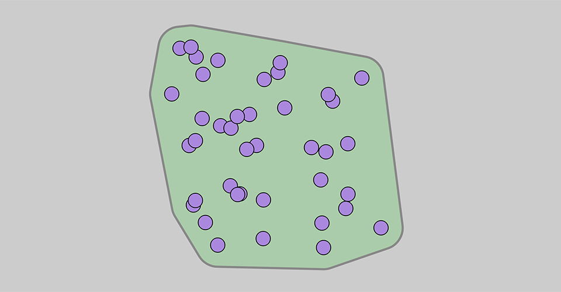
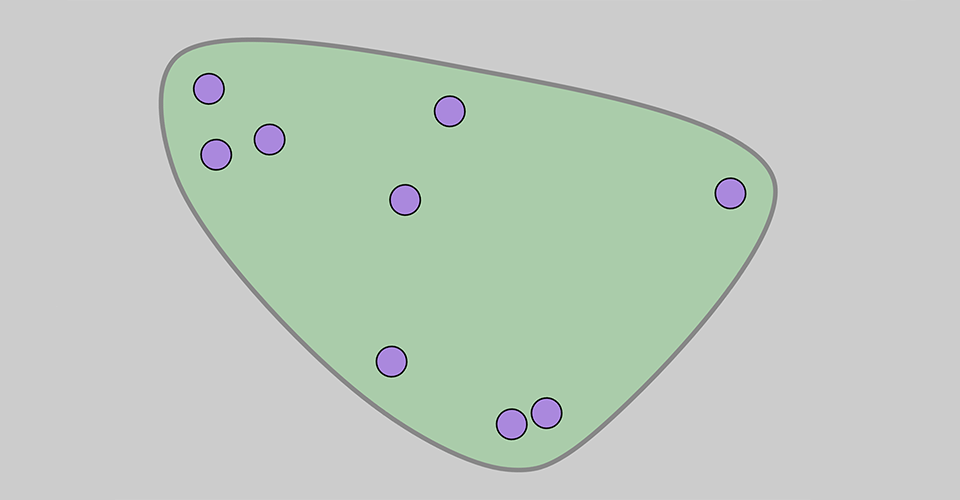

These are two examples of rendering a region around a set of 2D points. I use D3 to get the convex hull, and then show two different methods to generate a blob around them.

Click on image to view an animated demonstration.
This technique uses d3.polygonHull, then offsets each segment of the resulting polygon outwards, bridging the gaps with circular arcs. One could also envision using Bézier curves to get a blob with no straight segments.

Click on image to view an animated demonstration.
This approach renders a loose enclosing hull around a scattered set of points using a rounded Catmull-Rom curve. The strict convex hull is offset by a specified amount, and then interpolated with a closed curve.